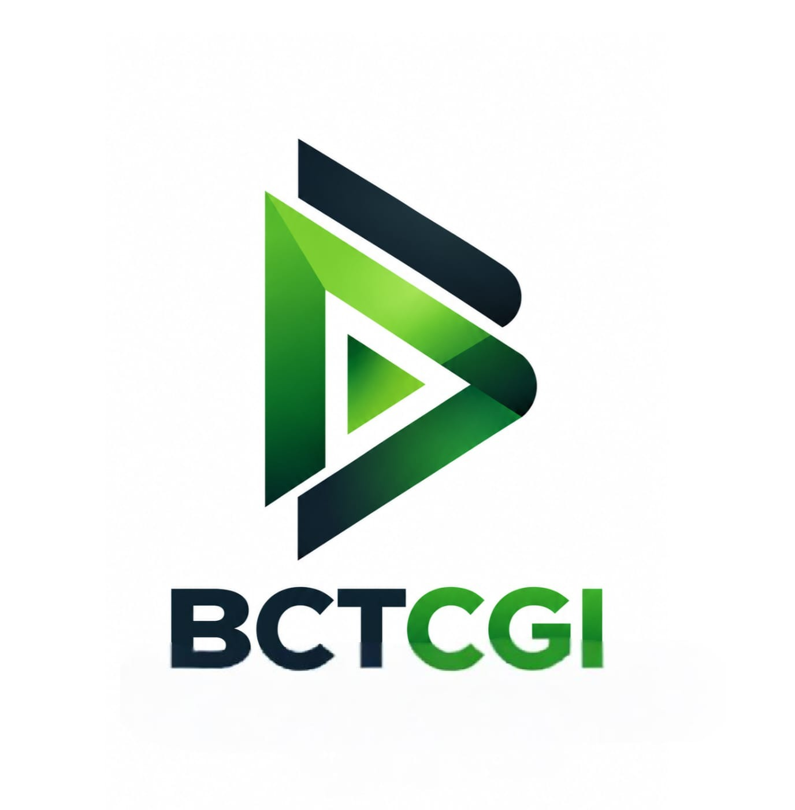
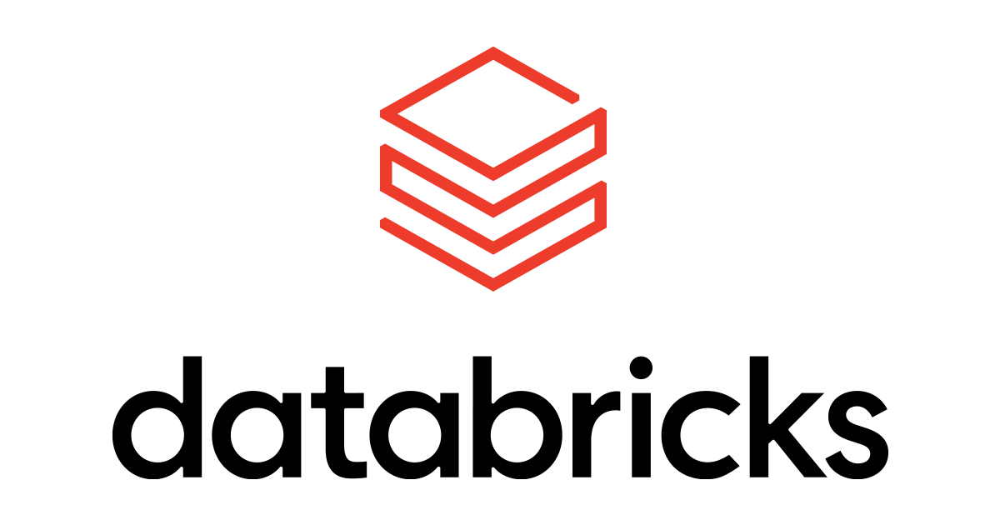
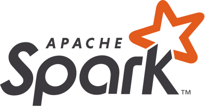

01
Technical depth
Architecture and engineering experience across cloud, data and analytics workloads.

BAYANCLOUDTECH CONSULTING GROUP INC.BayanCloudTech Consulting Group Inc. delivers practical cloud, data engineering, analytics and AI solutions for modern businesses.
BayanCloudTech Consulting Group Inc. helps organizations design, modernize and operate cloud data platforms that support reliable analytics and responsible AI adoption.
Connect data systems, improve platform foundations and turn technical requirements into secure, maintainable solutions.
Architecture and engineering experience across cloud, data and analytics workloads.
Clear scope, measurable outcomes and implementation aligned to operating needs.
Cloud-native foundations for pipelines, warehouses, lakehouses and AI workloads.
Documentation, enablement and engineering support beyond initial implementation.
Technical services for data platform modernization, engineering and intelligent solutions.
End-to-end data strategy for transformation journeys, including modernization roadmaps, platform selection and discovery workshops.
Cloud data engineering, modern data pipelines, cloud migration, lakehouse adoption, data warehouse and ETL modernization.
Data exchange platforms, data APIs, virtualization, cataloging, quality and governed data access.
Data platform maintenance, observability, automation and DataOps for a dependable data management lifecycle.
Machine learning, NLP, MLOps, AutoML, deep learning, augmented analytics, BI and data visualization.
We align technology choices to your existing environment, delivery model and business priorities.
Lakehouse implementation — Foundations for engineering, warehousing, analytics and AI workloads.
EDW modernization — Modernization pathways from traditional warehouses to cloud data platforms.
Legacy migration — Assessment, sequencing, secure transfer and validation for critical workloads.
Governed data access — Catalog, permissions, lineage and operational controls for trusted data use.


We use a collaborative delivery approach to establish shared expectations, scope, architecture and acceptance criteria.
Understand goals, systems, data and constraints.
Define architecture, scope, milestones and controls.
Implement components and test against requirements.
Document, enable teams and plan ongoing support.
Secure by design · Automate where practical · Test measurable outcomes · Document operational ownership.
Let’s discuss your roadmap and where business value is greatest. Would you be open to a 20-minute discussion to explore your data and technology priorities?
Perry Angeles
Co-founder and Partner Manager
BayanCloudTech Consulting Group Inc.
Building Possibilities. Delivering Impact.
partnerops@bayancloudtech.com
Or simply reply to this email.